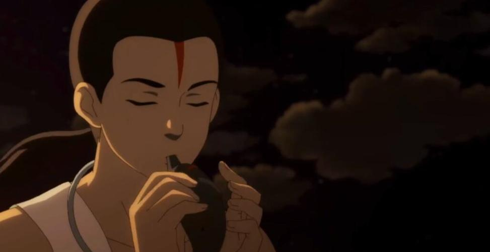
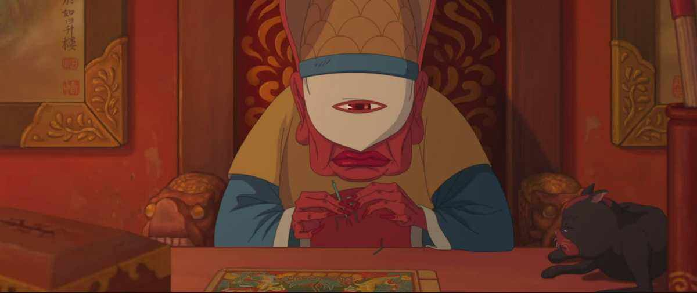
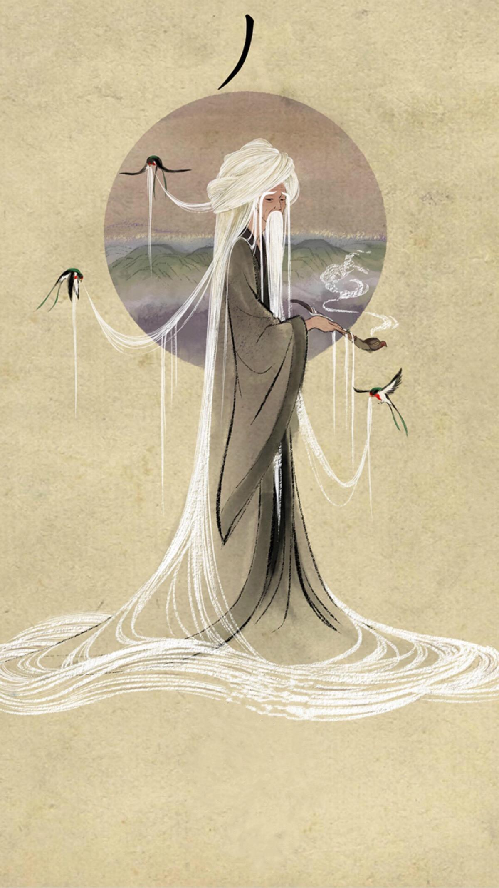

椿，女，是电影《大鱼海棠》中的女主人公，掌管海棠花的生长。
少女椿，居住在“神之围楼”里的少女，性格坚强执着，掌管着海棠花的生长，作为生家族的继承人，母亲凤期望她能像自己一样独当一面。 椿初踏人类世界被一少年所救，为此他付出了生命。怀着愧疚与感激的心，椿踏上了复活少年的道路，在海底世界秘密饲养人类少年的灵魂——一条拇指大的小鱼。 本为逆天之举，但有好友湫不离不弃地陪伴着她，在众人异议的目光下，椿将全部的愧疚与报恩之情注入鲲（死后少年化成的鱼）中。 虽然为村子带来灾难，但她最终幡然醒悟，为拯救村民不惜牺牲性命。
椿性格坚强、内心坚定而执着，外表看上去有些冷漠严肃，但是内心是非常细腻，内心善良，具有悲悯感恩的心，对人类世界充满好奇。 守护着自认为重要的东西并且始终相信自己。但心智却不够成熟，感性多于理性，有叛逆的一面，比较盲目任性、过于自我。 椿的本性是善良的，她用自己的性命交换报恩，又引发灾难，但最后她是成长的，认识到自己的过错并且牺牲自己去拯救了她的族群。 对椿来说，她不可预知后面那么大的天灾，整个村子都要毁灭。 她为了一个人可以不顾一切、牺牲所有、付出所有，但在经历了灾难后最终成长，当椿看到族人和这个世界受苦时，意识到了自己犯下了大错，最后她勇于去承担这些责任，愿意化作海棠去补天，来弥补自己的过错。 最后，湫成全椿和鲲，将她送去人间，和鲲一起生活。
鲲，真名杨胤杰，电影《大鱼海棠》中的男主人公。他为了救困于渔网中的椿而死去，其灵魂变成一条鱼，额头有一道红色的胎记，戴着传统的中式项圈。
鲲原是依海而居的人类少年，为了救困于渔网中的椿而在暴风雨中陷入漩涡死去，灵魂变成一条鱼。 椿为了使鲲死而复生，从灵婆那里用自己的一半寿命交换回了鲲的灵魂，并与湫一起秘密饲养鲲的灵魂。 但椿的行为触怒了族人，鲲被视为不祥之兆，椿所在的世界发生了大洪水。后来在椿的努力挽救下洪水结束了，最后湫打开了海天之门燃烧了自己，鲲与椿一起返回人类世界。
湫，一名天神，是国产动画电影《大鱼海棠》中的人物。与椿从小一起长大，从小由奶奶抚养长大，没有父母。掌管秋风和水元素，本源是秋叶。湫由苏尚卿配音。 他的泪水和怒吼足以形成淹没大地的洪水。
他从小缺少管束，天不怕地不怕，可在内心深处，却最害怕让他所爱的人受苦。深爱着椿，为了椿献出了生命，后又被灵婆复活，成为灵婆的接班人。
和椿是青梅竹马，喜欢椿，并时刻帮助着她。在椿成人礼的时候，默默地等待她回来。在得知椿为了使鲲复活而卖了自己的一半寿命这件事后，一直帮助着椿。 自己尝试用神力开天但未成功，最后在灵婆的帮助下，将椿和鲲一起送到了人间，自己却因此丢失了性命。后又被灵婆复活，成为灵婆的接班人。
灵婆是电影《大鱼海棠》的人物。手握生死薄，操纵死亡，掌管所有死去人类灵魂，鱼头人身，经常在私下做很多“非法”的交易。 灵婆这个角色在片中的作用可不仅仅是个功能性角色，在台词中，他曾提到，自己尚未还清曾经所欠下的，而结合片尾彩蛋来看，灵婆应当是被迫担当他的职位，因违反天理而常年在此修行和赎罪的。
灵婆掌管所有死去人类灵魂，住在北冥的如升楼里，与猫为伴，看守藏有人类灵魂的通天阁。 椿为了使鲲死而复生，用一半的寿命从灵婆那里换取了鲲的灵魂。湫为了救椿，用自己的所有寿命换取椿的另一半寿命，最后湫成了灵婆的继任者。
鼠婆子是动画电影《大鱼海棠》中的人物，因违天规被贬下界，掌管人类恶灵所化鼠群。在解开封印后，变回原来的样子，回到人间。
鼠婆子因违天规被贬下界，掌管人类恶灵所化鼠群，住在地下粪池旁，终日生活在黑暗中，无法与阳光接触，但渴望回到人间，曾说过“人间可是个好地方”。 后来因为得到椿从人间带来的信物（鲲的海豚状的埙），而在湫打开海天之门后，变回年轻的样子，并趁机回到人间。
丿，男，《大鱼海棠》中的角色，椿的爷爷，药师。
椿的爷爷,医术高明，一生救人无数却救不了自己最爱的人。片中即将死去时为救中双头蛇毒的湫而牺牲自己，提前死去。
